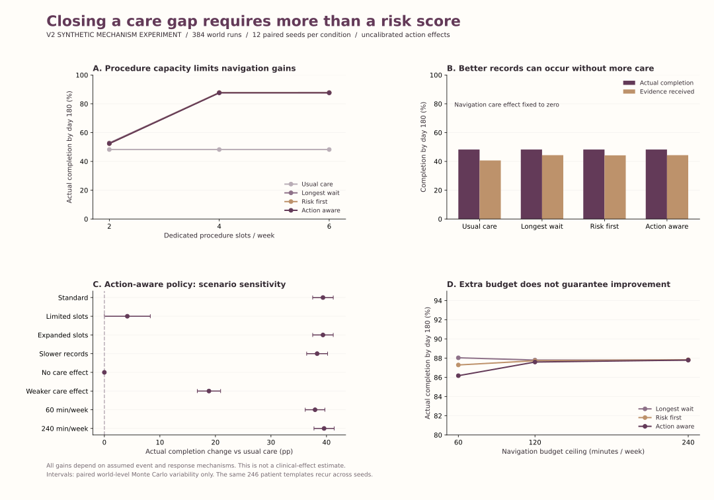

V2 已实现独立的离散事件模拟、动态风险预测、任务分配和压力测试。现有 V1 数据与结果保留不变。本轮不是把一个更高分的模型套在旧表格上：患者会联系失败、取消、未到诊、重新预约，也可能早已完成但记录未回传；所有人共享有限的检查名额和导航工时。
V1 是固定快照的 5,000 人筛查队列，其中 246 个 FIT 阳性，157 个已有完整 180 天窗口。V2 沿用这 246 位阳性的入组时间和人口模板，重新模拟后续事件，并为每一位延伸完整的 180 天随访。它不是对 V1 缺失结局的真实补全，也不能将 V2 与 V1 的完成率差当成干预效果。
每个随机种子代表一个新的假想世界；不是新增的真实患者。所有地区共用一个为本队列预留名额的虚拟服务池，不能解读为 Iowa 实际医院容量。常规照护仍有联系和诊疗工作；“导航工时”只计算本实验额外分配的任务，不是整个系统的总成本。
每条事件有发生时间 occurred_day；只有回传后才有系统可用时间 available_day。模型与调度器只能接收截至决策日的观察投影。
| 层 | 内容 | 能否用于决策 |
|---|---|---|
| 隐藏事实 | 可联系性、潜在支持需求、外院路径、流程摩擦、记录丢失机制 | 不可用，仅生成和验证 |
| 实际事件 | 联系、转诊、接诊、预约、取消、未到诊、检查、计划 | 只有成为可见记录后可用 |
| 可见记录 | 截至当日已收到的事件、已记录的预计检查日期 | 可以 |
| 共享预约日历 | 当日已被预订的名额与下一个可用名额 | 作为独立的、即时可见的排班接口假设 |
| 结局审计 | 实际完成、已收到证据、两者差异 | 只用于事后评估 |
外院患者报告的预计检查日期是可见信息；不能据此直接认定检查已完成。界面可把时间拨回任一天，同时查看系统当时知道什么，以及仅验证者能看到的模拟真值。
检查日历按周限制名额；取消释放未来名额，未到诊仍占用当天名额。导航不能增加名额。任务仅在阳性后第 30–150 天分配，每人最多三次，至少间隔 14 天；外院核实在已记录的预计检查日期之后至少 7 天才可安排。上述都是实验工作流设定，不是临床指南。
| 任务 | 分钟 |
|---|---|
| contact | 20 |
| referral | 10 |
| handoff | 10 |
| scheduling | 15 |
| support | 25 |
| reconcile | 10 |
| capacity_review | 10 |
常规联系在第 2、10、24 天尝试；首次成功联系后才记录支持需求。默认潜在支持需求比例 35%、外院路径 13%、拒绝偏好 6%；转诊、接诊、预约摩擦概率分别为 18%、12%、20%。内部检查记录丢失概率 3%、外院 25%。联系、取消、到诊及回传延迟的详细规则可在引擎和参数清单逐条核对，均为模拟假设。
默认导航的单次照护推进成功概率设为 85%，另受联系概率、资格和重复任务限制。这是偏乐观的机制假设，未按临床效果标定。弱作用场景将该概率乘 0.35，零作用场景完全关闭真实照护推进。没有把文献中的年度效应直接换算成这里的 180 天收益。
训练使用 10 个世界（种子 1001–1010），共 8,729 条第 30、60、90、120、150 天可见状态；同一患者可以贡献多个时间点。检查名额在预定的 3–5 范围内变化，回传倍率为 1 或 1.5。验证用 1101–1104；评估用 2001–2012，互不重叠。按世界划分，避免把同一轨迹的不同时点随机拆到训练和验证中。
这属于留出模拟世界的机制检验，不是现实时间外推或外部临床验证。病例模板重复，真正独立的模拟重复单位是世界。隐藏事实、未来事件、最终结局、人口特征均不进入特征列表；病例的真实 180 天结局只作为训练/评估标签。
固定候选为标准化 Logistic（L2，C=1）与 Random Forest（120 棵树，深度 7，叶节点至少 30）。按验证世界第 60 天 Brier 选择 random_forest，随后冻结；未根据评估场景的成绩重新调参。开发验证集的置换重要性只作诊断，未用于筛特征；相关流程字段的置换重要性不能作因果解释。
| 候选模型 | 验证 AUROC | 验证 Brier |
|---|---|---|
| logistic | 0.948 | 0.073 |
| random_forest | 0.972 | 0.062 |
标准场景留出世界第 60 天，选中模型平均 AUROC 为 0.972，Brier 为 0.065。这个高分来自已知模拟机制中的可预测结构，不能包装成真实患者预测性能。模型在常规照护轨迹上训练，主动干预后的状态分布可能改变；容量 2/6 和延迟 2.5 倍也超出部分训练范围。
常规流程不额外分配导航；等待最久优先按 elapsed_days 排序；风险优先按冻结模型分数排序。后二者在工时范围内依次选择完整任务。
可行动性策略为每个可见状态选择任务，用风险 × 任务权重 × 剩余时间构成启发式分数；外院核实的文档价值单独赋分。然后用 0/1 背包选取不超预算的任务组合。权重保存在 manifest.json 中。该分数不是学得的个体干预效果，也不保证最大化真实完成数。 它把文档核实和照护推进合在一个人为定义的目标中，因此必须同时展示两个结局。
每周 4 个检查名额、120 分钟额外导航。下表为 12 个世界的均值；患者数模板为每个世界 246 人。小数人数是跨世界均值。
| 策略 | 实际完成率 | 已收到证据的完成率 | 实际完成率差值（百分点） | 额外导航小时 | 已完成但缺记录（人） |
|---|---|---|---|---|---|
| 常规流程 | 48.2% | 40.7% | +0.0 | 0.0 | 18.7 |
| 等待最久优先 | 87.8% | 83.1% | +39.6 | 103.9 | 11.6 |
| 预测风险优先 | 87.7% | 82.9% | +39.5 | 102.5 | 12.0 |
| 按可行动性分配 | 87.6% | 82.9% | +39.4 | 102.5 | 11.7 |
相同的是工时上限，不是实际投入完全一样。默认参数下新增导航改善模拟完成率，但复杂排序没有显示出比等待最久优先更好的结果。不能据此把更多自动化等同于更大真实收益。
以下是常规流程第 180 天状态的跨世界平均人数。真实状态与系统看到的状态采用同一患者集合，但不必处在同一个类别。
| 停留/完成状态 | 模拟实际人数 | 系统记录人数 |
|---|---|---|
| 预约后完成证据待核实 | 0.0 | 2.1 |
| 尚未预约 | 26.3 | 26.3 |
| 取消后待重约 | 4.8 | 4.8 |
| 已完成 | 118.7 | 100.0 |
| 未联系上 | 23.3 | 25.1 |
| 已明确拒绝 | 12.1 | 12.1 |
| 接诊未确认 | 17.7 | 17.7 |
| 未到诊后待重约 | 11.4 | 11.4 |
| 外院证据待回传 | 0.0 | 14.8 |
| 转诊未开 | 31.7 | 31.7 |
默认常规流程中平均 18.7 人已经完成但在第 180 天尚无检查记录。它们会出现在系统的未完成环节中；不能直接全部算成真实照护流失。已明确拒绝的病例单独保留在本模拟固定分母中，行动清单排除已记录拒绝；这不是对正式质量指标排除规则的复现。
下表展示可行动性策略相对常规流程的差值；原始表同时保留全部四种策略。区间为 12 个配对世界的 t 区间，仅反映固定参数下的 Monte Carlo 变动，不包含临床参数不确定性，不能作为确认性临床显著性检验。
| 场景 | 实际完成率变化（百分点） | 配对区间 | 记录完成率变化（百分点） |
|---|---|---|---|
| 标准资源 | +39.4 | +37.5 至 +41.2 | +42.2 |
| 检查容量紧张 | +4.1 | -0.0 至 +8.3 | +6.2 |
| 检查容量充足 | +39.4 | +37.5 至 +41.2 | +42.2 |
| 记录回传更慢 | +38.3 | +36.4 至 +40.2 | +45.4 |
| 导航不改变真实照护 | +0.0 | +0.0 至 +0.0 | +3.7 |
| 导航推进作用较弱 | +18.8 | +16.7 至 +20.9 | +22.2 |
| 每周导航 60 分钟 | +37.9 | +36.2 至 +39.7 | +40.7 |
| 每周导航 240 分钟 | +39.6 | +37.7 至 +41.4 | +42.4 |
零作用场景是关键反证：允许核实已完成的外院记录，但真实完成率必须完全不变。容量紧张时，更多联系无法替代检查名额。工时从 60 增至 120/240 分钟没有稳定提高完成率；因为行动时机、最多三次限制和资源竞争会改变路径。不能据此推出临床上减少人手更好。
所有策略使用按种子、患者、事件类型和次数索引的随机数。策略改变事件数量不会把所有后续随机环境换掉。因为患者共享名额，一个人的干预可能影响另一个人的排期，效果在整个世界层面评价；单人轨迹是联合策略的示例，不是个体因果效应估计。
已按语言和保险输出每个世界的完成数、记录数和导航工时；这些变量不用于任务优先级，也不决定潜在障碍。任意模板比例和随机差异不是现实差距结论。当前尚未模拟死亡、跨系统重新入组、诊断癌症后的治疗、多次 FIT、真实工作人员行为、电话接通时长分布或服务成本。
下一步需要真实导航人员审阅事件分类、参数和行动可执行性；再以获批的真实事件记录验证记录缺口的分类，估计资源和导航响应。尤其需要检验哪类行动确实改变结局，才能用数据学习干预收益，而非继续使用启发式权重。
Coronado 等 2025 年随机试验在 967 名参与者的一年随访中报告导航组与常规组完成率 55.1% 和 42.1%，差值 13.0 个百分点。它支持导航这一干预方向，但人群、环境和时间窗与本模拟不同，不能用来背书本模拟的增益。原始研究
2026 年的另一项随机试验亚组时间分析把预约、肠道准备和社会需求支持纳入导航。这支持将这些过程纳入事件模型，但我们没有使用其患者数据，也没有据此估计本工具的真实效果。原始研究
预测方法参考 scikit-learn 集成模型 和置换重要性。本地离散事件引擎用标准库优先队列实现；未使用 SimPy。
运行 python3 scripts/simulation_v2/experiment.py，再运行 python3 scripts/simulation_v2/report.py。依赖沿用 scripts/requirements-models.txt。模型训练和完整矩阵在当前环境约一分钟内完成；看板读取预计算结果，不在浏览器中实时拟合或推演。